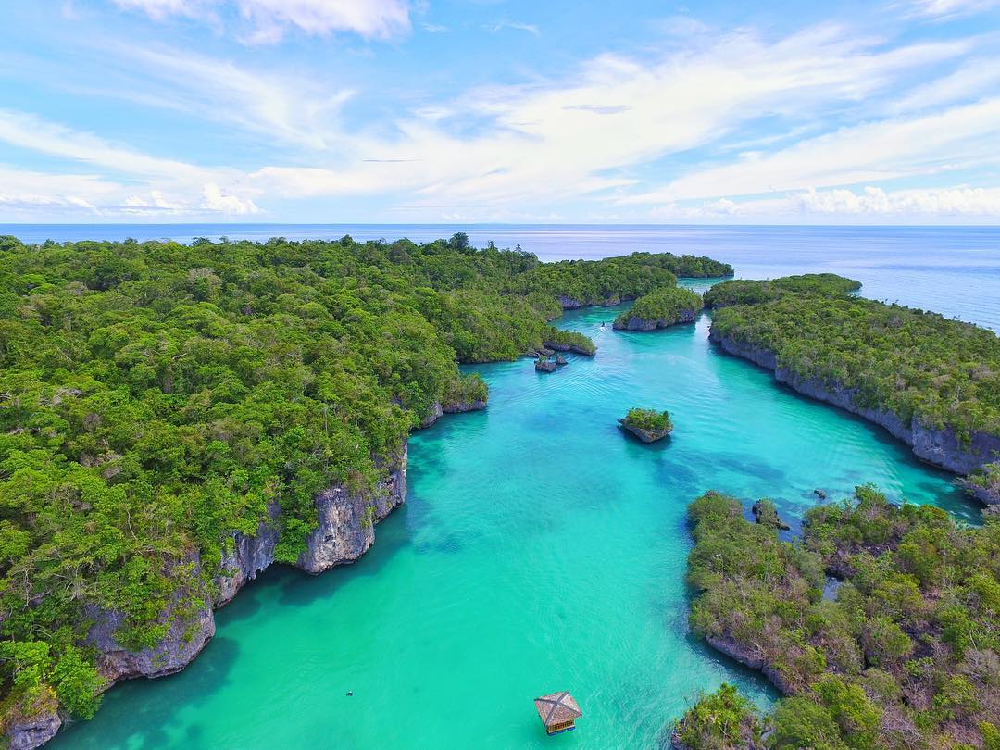

- Bandaneira
- Kepulauan Kei
- Ora Beach
- Pulau Bair 
- Pulau Halmahera

Bandaneira menjadi salah satu tempat wisata yang cukup populer sekarang untuk dikunjungi terutama di kawasan Maluku. Bandaneira sendiri berlokasi di kawasan Kepulauan Banda. Pada masa kolonial dulu pulau ini merupakan pusat perdagangan rempah-rempah yang sangat dikenal. Tidak hanya populer dengan sejarahnya, Bandaneira juga memiliki keindahan laut yang luar biasa. Menyelam atau snorkeling di sini kamu akan menemukan beraneka ragam biota laut hingga 250 spesies.
Selain itu, di Pulau Banda kamu juga bisa mengunjungi salah satu spot menarik bersejarah lainnya bernama Benteng Belgica. Untuk sampai ke sini kamu hanya perlu naik kapal feri dari kota Ambon. Sedangkan, jika kamu berasal dari Jakarta atau Pulau Jawa bisa langsung naik penerbangan dengan tujuan kota Ambon, Maluku.
Destinasi wisata yang tidak kalah menarik untuk kamu kunjungi saat ke Maluku adalah Kepulauan Kei. Di sini, kamu bisa menemukan sekitar 287 pulau, seperti Pulau Dullah, Pulau Kai Kecil dan Pulau Kai Besar. Dari sekian banyak pulau dan pantai di sana kamu bisa mengunjungi Pantai Pasir Panjang menjadi salah satu yang favorit.
Berlokasi di Pulau Kai Kecil, Pantai Pasir Panjang merupakan pantai favorit karena pasirnya sendiri sangat bersih, halus dan putih. Keindahan Kepulauan Kei pun ditambah dengan banyaknya pohon-pohon rindang yang ada di sekitar tepi pantai.
Ora Beach juga menjadi salah satu tujuan wisata favorit di kawasan Maluku. Keindahan berupa pegunungan, pepohonan yang rindang serta air laut yang jernih menjadikan Ora Beach primadona baru untuk pariwisata di Maluku. Selain itu, tempat ini pun semakin dikenal dengan dibangunnya sebuah Eco Resort yang disebut juga sebagai Pulo Cinta. Para pengunjung yang datang nantinya bisa tinggal di pondokan yang mengapung di atas laut yang dibentuk sedemikian rupa sehingga berbentuk hati.
Dari banyak tempat yang ada di kawasan Maluku, Pulau Bair mungkin menjadi tempat yang belum banyak dikenal oleh wisatawan. Tetapi, sekarang Pulau Bair sudah mulai dikelola untuk menjadi tujuan wisata baru di kawasan tersebut. Keindahan laut di pulau ini bahkan disejajarkan dengan tempat wisata populer lainnya seperti Raja Ampat yang berlokasi di Papua Barat.
Para wisatawan yang datang bisa melakukan berbagai aktivitas, seperti snorkeling, menyelam hingga memancing. Serunya lagi, Pulau Bair terlindungi dari gelombang laut, jadi kamu pun bisa dengan aman bermain kano atau jetski di area perairannya.
Berkunjung ke Pulau Halmahera kamu bisa melihat keindahan alam berupa pantai pasir putih lengkap dengan hutan alami dan gunungnya yang spektakuler. Agak berbeda dengan pulau lainnya, Pulau Halmaheran terdiri dari pegunungan indah yang tertutup oleh kawasan hutan.
Jika kamu berkunjung ke sini pada bulan Desember, jangan lewatkan kesempatan untuk beselancar karena pada waktu tersebut gelombang air sedang besar. Selain itu, kamu pun bisa berkunjung ke Telaga Biru yang memiliki suasana yang tenang.